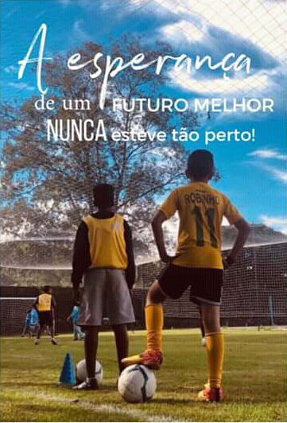

Apadrinhamento de Crianças
Somos uma Organização do Terceiro Setor sem fins lucrativos, séria e comprometida em mudar a realidade social de muitas crianças, adolescentes e suas famílias em situação de vulnerabilidade social, expostas a um contexto de tráfico de drogas, violência doméstica, defasagem escolar, dentre outras violações de direitos, moradoras da região norte de Campinas, divisa com Hortolândia, aproximadamente a 1 km do complexo penitenciário, local de muitas ocupações, pobreza, exclusão e risco social.
Desenvolvemos programas e atividades esportivas, culturais e de lazer que visem a garantia de direitos e a potencialização pessoal, bem como o acompanhamento das famílias através do Serviço Social.
Local da ONG
Nosso local se encontra na cidade XPTO, na Rua XPTO3, número 999. É uma fazenda com diversos viveiros para todos os tipos de animais
Animais
Aceitamos diversos tipos de animais em nossa ONG, possuindo o ambiente e espaço adequado para eles, como por exemplo:
- Cães
- Gatos
- Felinos
- Aves
- Répteis
- Peixes
- Entre outros